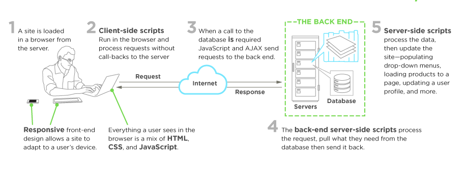
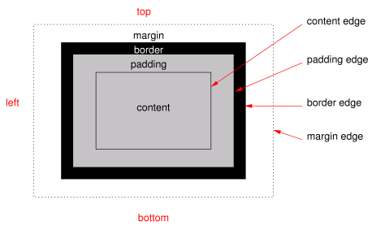
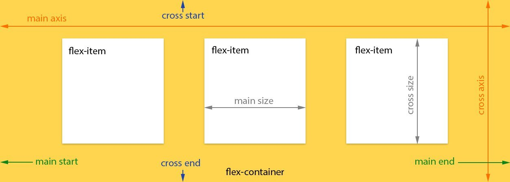
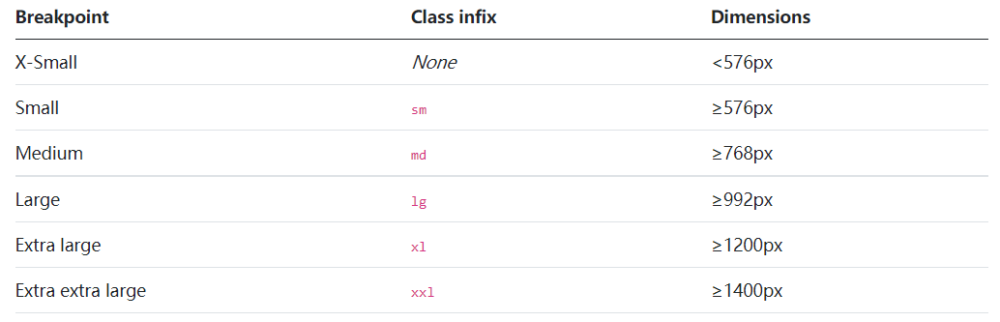
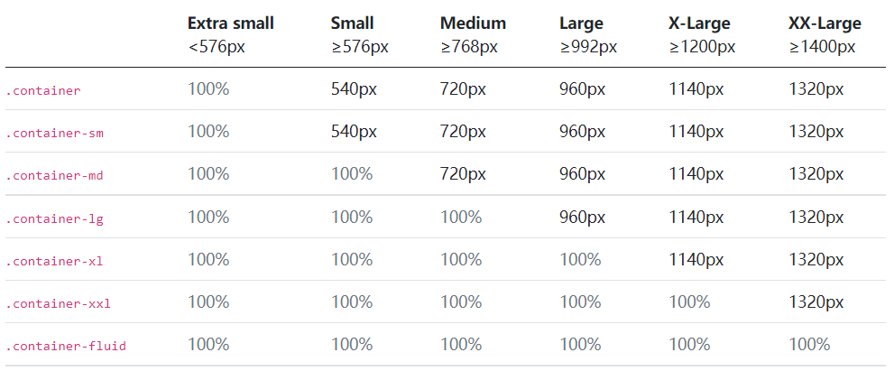

Created by 杨志宏
Version: 0.11.0
前端（frond-end）是和后端相对应的概念，另外一个相关的概念是全栈（Full Stack）。简单来说，前端开发的主要工作是负责和用户进行交互，为用户呈现信息。

编辑器选择由微软开发的开源免费的 VS Code 编辑器。VS Code 具有生态繁荣的特点，几乎我们想要的功能都能通过插件实现，是一款值得投入时间资源去熟悉的编辑器。
Chinese (Simplified) Language Pack，微软官方提供的中文语言包。Live Server，新建一个可以实时刷新的本地服务器，大大减少开发者的重复性动作，当有文件修改时，就可在页面中看到更新后的效果。Editor: Format On Save，将其设置为true。设置中，根据自己的喜好，打开或关闭自动存盘功能，建议新手打开自动存盘功能。安装必要的浏览器，如 Firefox、Chrome、Edge 等常见浏览器，以便在不同浏览器中测试。
Git 是一款开源的分布式版本管理工具，主要用于内容的版本管理，可与版本管理网站配合，实现内容的本地和远程同步、版本管理等等功能。
安装后，建议将 VS Code
中的默认终端设置为Git bash，方便后续使用。
注意：安装的时候需要勾选必要设置，如路径以及和 Windows 终端的结合。
Github是免费提供 Git 版本管理服务、代码托管等服务的网站。
Tips：可借助脚本或者其它自动化工具，让流程中的重复性工作自动运行。
HTML（HyperText Markup Language，超文本标记语言）是为“网页创建和其它可在网页浏览器中看到的信息”设计的一种标记语言。
就目前而言，HTML5 这一术语指的是一系列现代网页相关技术，已不单指 HTML 本身。
HTML
文件后缀名为“.htm”或“.html”，是一种包含了 HTML
标记的文本文件，我们通常所说的网页实质上就是 HTML 文件，HTML
的编辑非常简单，学习成本很低，而且所有网页的源代码都可通过浏览器直接查看。正如蒂姆·伯纳斯－李所说：“（互联网）起飞原因在于，全球的人可随意融入参与。”
HTML 的语法规则很简单，下面我们从文档结构、元素及标签、属性及值、特殊字符、嵌套规则、注释等几个方面进行理解。
HTML 文档可以分为文档声明、网页头部分和网页主体部分三部分。
文档声明指的是 <!DOCTYPE html>，用来说明当前文档为
HTML5 页面。
网页头部分指的是<head>和</head>部分，在这个区域一般放置网页相关的内容，比如网页编码方式、关键词、网页内容描述和网页相关联的文件等等。这些包含在<head>和</head>之间的内容一般不会显示在用户的浏览器中。
网页主体部分指的是包含在<body>和</body>之间的部分，这部分内容是显示在浏览器中的内容，大部分
HTML 的编辑工作都是在主体部分中完成，如图片、文字、超链接等等。
头部分和主体部分又包含在<html>和</html>之中。浏览器会把<html>和</html>之中的内容视为网页。
元素是构成网页内容的基础单位，元素由起始标签、内容和结束标签构成，如：
其中<h1>是h1元素的起始标签，标签以“<”开始，以“>”结束，</h1>是结束标签，结束标签中含有“/”，位于起始标签和结束标签之间的“一级标题”是h1元素标记的内容。
元素可以嵌套，比如在段落 p
中插入图片img。这时，img元素作为整体构成段落元素p的内容。
并非所有元素都包含起始标签和结束标签。如上例中，img元素就只有一个起始标签，没有结束标签，这一类元素被称为自闭和元素。除img元素之外，常见的自闭和元素还有：<br>、<embed>、<hr>、<input>、<link>、<meta>、<source>、<wbr>。
属性（Attributes） 及其
值（Values）
对于某些元素而言是必不可少的，比如新闻网页中经常使用图片来传递信息，图片在
HTML
中使用img元素来标记，但必须使用相应的属性及其值，告诉浏览器图片存放的位置、图片的大小等信息，其中图片存放的位置用src属性来表示，而图片的大小用
width 和 height
属性来表示，属性的值为字符串。如：
HTML
中，大于号>、小于号<、引号"等一些字符，是有特殊意义的，比如
HTML
的标签就是以<开始，以>结束，如果直接使用，容易引起歧义。因此，HTML
中提供了输出特殊字符的机制，使用&字符开始，以;结束，可以用来输出特殊字符，在&字符和;之间，可以是名词或者数字编码。例如："表示引号。
完整的 HTML 转义字符列表参见 http://tool.oschina.net/commons?type=2。
在HTML中，可通过增加注释的方式，提高文档的易读性，甚至实现部分功能。
注释以<!--开头，以-->为结尾。所有包含在注释里面的内容，不会被浏览器显示出来。
html元素html 元素表示一个 HTML
文档的最顶端元素，或者是根元素，其他元素都包含于html元素之中。
html
元素有一个重要属性lang，用于指定文档的语言，以方便语音合成、翻译工具、浏览器等工具决定采用何种规则来处理网页。
head元素是html元素的第一个子元素，用来标记HTML文档的一系列元数据（如文档标题、作者、关键词、相关样式表、相关脚本等等）。
title元素位于head元素之中，用来标记整个
HTML 文档的标题或名称，title元素不得重复出现。
meta元素用来标记不能被title、base、link、style 和 script元素标记的其他各种元数据，如网页关键词、版权信息、页面编码信息等等，最常见的是通过meta元素设定页面的编码信息：
style元素是head元素的子元素，用来设定 HTML
文档的内部样式表。
这些元素用来标记对应区块的标题，其中 h1 为最高级别，h6 为最低级别的子标题。
合理使用标题元素，也有利于搜索引擎对页面内容的理解。建议使用标题元素来组织文档的大纲。
p元素用来表示段落，列表元素ol和ul不能包含于p元素中。
Ol
元素表示一组有序列表，所谓有序列表，就是列表项目的顺序是有意义的，如菜谱中的工序。列表项目使用li元素标记。
Ul
元素表示一组无序列表，所谓无序，就是列表的顺序可以随意改变，列表项目使用
li 元素标记。
Li元素表示列表中的项目。
div元素本身并没有特殊含义，它是 HTML
中用来标记内容结构的最常用元素，用来将相关的元素组织在一起，形成逻辑上的整体。
a 元素用来表示超链接或者文档内部锚点。如果 a 元素有 href
属性，它就表示超链接。
当 a 元素表示超链接时，可以使用 target
属性指定链接打开方式，如：
Img 元素用来在文档中插入图片。src
属性用来指定图片来源，alt 属性用来说明图片内容。
Iframe 元素生成内嵌框架，引用另外一个网页的内容。src 属性用来指定内嵌网页的地址。
table 元素用来生成表格。表格拥有行、列。caption
元素为表格元素添加标题或者说明信息，caption 应该包含在
table 元素中。tbody 元素用来标记表格主体。thead 元素用来标记表格的表头。tfoot
元素用来标记表格的脚部，通常都是合计之类的信息。tr 元素用来标记表格的行。td 元素用来标记表格的单元格。th 元素表示表头的单元格。表单相关常用元素有form、label、input、button等等。
form 元素用来标记一组和表单相关的元素，如文本框、提交按钮等等内容，是服务器和用户进行交互的最重要元素。
form 元素最重要的两个属性是 action 和
method，分别对应表单提交后的处理程序和表单提交方式。
label 元素用来标记表单交互元素的标签，是一个辅助说明性的元素，label 元素往往对应特定的元素。
input 元素通过 type 属性，可生成各种交互元素，如文本框、密码框、按钮等等。
Button 元素生成一个按钮，可通过 type 属性控制按钮类型。type 的值有 reset、submit 和 button，分别对应重置按钮、提交按钮和普通按钮。
CSS(Cascading Style Sheets 层级样式表) ，用以控制页面样式，实现页面中元素的表现形式、区块的布局、不同设备的适应等等，是 Web 标准中实现内容和表现相分离的唯一机制 。虽然 W3C 目前正式推荐的版本是其 在 2011 年发布的 CSS2.1，但由于还处于起草阶段的 CSS3 拥有更为便利和强大的表现手段，因此浏览器厂商为争夺用户，大都支持 CSS3 的特性。目前的实际工作中，CSS3 的使用已较为普遍，故而我们在学习 CSS 时，以 CSS2.1 版本为基础，兼顾 CSS3 的新特性。
通过 CSS，我们可以进行页面布局，设置元素样式，还可将这些样式或者布局应用到多个元素或者多个页面中。
CSS 语法规则非常简单，包括注释和语法声明，语法声明分成两类：at 规则 (at-rules) 和 CSS 规则集 (rule sets)。声明之间可由空白字符连接。
在 CSS
中，注释以“/*”开始，以“*/”结束，注释之内的内容会被浏览器忽略。注释不能嵌套使用。
At
规则以“@”关键字开始，之后紧跟标志符。比如：“@import”。
“@import”
规则的作用是从其他样式表文件中导入样式格式。@import
关键字之后必须跟随要引入到当前文件中的样式表 URI
地址，不过也可以仅用字符串表示。
常用的@规则还有“@media”，“@media”表示为特定媒体（多个媒体之间可用逗号分隔）声明样式，即CSS提供的媒体查询功能，例如：
规则集，由选择符和跟随其后的声明块组成。声明块以“{”开始，以“}”结束，其中的声明以“;”分隔。声明由属性名称和属性值组成，属性名称和属性值之间用“:”连接。例如：
CSS 是一门用来描述 HTML、XML 文档在屏幕、纸张或者朗读设备等等上如何表现的语言，CSS 使用选择符（selector）将样式（style）属性和文档中的特定元素（element）进行绑定。随着相关技术的演进，CSS 中的选择符也越来越丰富，功能也越来越强大。
CSS 选择符对大小写不敏感。
简单选择符（Simple Selector）指的是选择符本身再无法分解，是构成组合选择符、群组选择符的选择符，这类选择符是 CSS 选择符的基础。
类型选择符（Type Selector），也叫做元素选择符，该选择符能代表文档树中的所有指定的元素。
上述规则将使文档中所有的 h1 元素字体颜色为红色。
通配选择符（Universal Selector），将选定所有元素。通常不建议使用通配选择符，因为它会遍历并命中文档中所有的元素，出于性能考虑，不建议使用。
上述规则将使文档中所有元素的前景色为红色。
属性选择符（Attribute Selector）将选定那些拥有匹配属性的元素。具体如下表：
| 属性选择符 | 含义 |
|---|---|
E[foo] |
选择具有“foo”属性的元素 |
E[foo="bar"] |
选择具有“foo”属性并且属性值完全等于“bar”的元素 |
E[foo~="bar"] |
选择具有“foo”属性，且值中其中一个等于“bar”的 E 元素（包含只有一个值且该值等于“bar”的情况）。 |
E[foo^="bar"] |
选择具有“foo”属性，并且属性值以“bar”开头的元素 |
E[foo$="bar"] |
选择具有“foo”属性，并且属性值以“bar”结尾的元素 |
E[foo*="bar"] |
选择具有“foo”属性，并且属性值包含“bar”的元素 |
E[foo|="en"] |
选择具有“foo”属性，属性值并且以“en”开头并用连接符”-“分隔的字符串的 E 元素 |
类选择符（Class Selector）将选择那些 class
属性值为指定值的元素。
.bar /*将选择所有具有 class="bar"属性及值的元素*/
h1.bar /*将选择具有 class="bar"的所有 h1 元素*/
.bar.foo /*将选择 class 值中同时包含 bar、foo 的元素，注意中间没有空格*/带有元素名称的类选择符和使用 class
属性的属性选择符是等价的。如 div.value 就等同于
div[class~=value]。
ID 选择符（ID Selector）将选择 ID
属性等于指定值的元素。按照 W3C 标准，ID 属性在
DOM 中的值应该是唯一的。
伪类（pseudo-class）的概念是指那些不在文档树中或者不能使用其他简单选择符选择的内容。伪类以“：”开头，后面跟随伪类名称。根据类别不同，伪类选择符又分为：链接伪类选择符、用户行为伪类选择符、目标伪类选择符、语言伪类选择符、UI
元素伪类选择符、结构伪类选择符、否定伪类选择符等。由于伪类选择符内容较多，虽然其从概念上将还是简单选择符，故我们单独阐述。
浏览器通常会将未访问的超级链接和访问过的超级链接加以区分，CSS 提供了：link 和：visited 链接伪类选择符用以区别它们。
浏览器通常会在用户交互时用不同形式来表现交互状态。CSS 使用以下三个伪类用以和用户交互：
有时 URI 只需资源内部的某个部分，这种类型的 URI
的尾部含有数字标记“#”,
在“#”之后是锚点识别符（也叫片段识别符）。例如下例中的
section2：
使用:target伪类选择符，就可以对资源内部中片段识别符（如上例中
section2）对应的元素设置样式。
语言伪类选择符能对特定 lang 属性的元素设置样式。如：
UI 元素伪类选择符可以针对 UI 元素的状态进行选择。
enabled
状态的元素。disabled
状态的元素。：checked
伪类选择符，可以选择被用户切换到选中状态
radio、checkbox 等元素。结构伪类选择符基于文档树中元素的父子兄弟关系进行选择。
否定伪类选择符:not(X)，将匹配不含有 X
选择符的元素。例如：
上述规则将匹配给定列表项（除最后一项之外），使其有一条红色的下划线。
伪元素能创造出 HTML
语言无法创造的抽象元素，如段落首行、首字母、元素前、元素后等等。伪元素选择符以“::”开始。
用以区别伪类选择符，但以前的写法仍然有效。后面跟元素元素名称。
组合选择符能根据文档树中选择符所代表的父子兄弟关系进行更加准确的选择，其在实际工作中使用率很高。
两个简单选择符之间用空格组合在一起，就表示后代选择符，如：
表示选择位于 h1 元素中的 em 元素。
子元素选择符使用“>”将两个简单选择符组合在一起，选择具有父子关系的子元素。不同于后代选择符，子元素选择符只能命中子元素，而不能命中孙辈。例如：
表示选择 class 为 demo 的元素中的
div 子元素。
两个元素用“+”连接在一起，如E+F，表示选择出现在
E 元素之后的 F 元素。
两个元素用“~”连接在一起，如
E~F，兄弟选择符会命中所有符合条件的兄弟元素，而不强制是紧邻的元素。
在 CSS
中，使用“,”将选择符连接在一起，表示这些选择符共享相同的样式声明。例如：
上述例子表示，h1、h2、h3 元素的颜色都为红色。群组选择符，能降低 CSS 样式书写时的重复规则，提高开发效率。
样式表共有三个来源：作者、用户以及用户代理（通常为浏览器）。
CSS 层级为每个样式指定权重。当应用多条规则时，权重最高的规则优先。
层级样式表之所以叫作“层级”，就是规则可以重叠、可以嵌套。这样就产生了新的问题：当规则重叠时，CSS 是如何决定采用哪个规则呢？总的原则是：权重越高的规则优先，相同权重的规则，后面最出现的规则将覆盖前面的规则。如：
浏览器在渲染页面时，会从上至下执行 CSS 规则，这样，上述代码中一开始声明的段落橙色背景，会被随后声明的段落绿色背景取代。
默认情况下，作者创建的规则权重高于用户创建的规则。作者和用户创建的规则优先级别高于浏览器默认规则。
浏览器按照如下规则寻找元素和属性的值：
!important声明的规则优先级别高于正常方式声明的规则，并且用户申明的!important规则优先于作者指定的!important规则。
除了先后顺序外，CSS 还按照选择符的具体程度来决定优先级别，具体计算规则如下：
style 属性的值，如果设定了
style 属性，则 a=1。ID 选择符数量 (= b)。= c)。= d)a-b-c-d
的值连接在一起就得到选择符的优先级别，该值越大，优先级别越高。例如：
* {} /* a=0 b=0 c=0 d=0 -> specificity = 0,0,0,0 */
li {} /* a=0 b=0 c=0 d=1 -> specificity = 0,0,0,1 */
li:first-line {} /* a=0 b=0 c=0 d=2 -> specificity = 0,0,0,2 */
ul li {} /* a=0 b=0 c=0 d=2 -> specificity = 0,0,0,2 */
ul ol+li {} /* a=0 b=0 c=0 d=3 -> specificity = 0,0,0,3 */
h1 + *[rel=up]{} /* a=0 b=0 c=1 d=1 -> specificity = 0,0,1,1 */
ul ol li.red {} /* a=0 b=0 c=1 d=3 -> specificity = 0,0,1,3 */
li.red.level {} /* a=0 b=0 c=2 d=1 -> specificity = 0,0,2,1 */
#x34y {} /* a=0 b=1 c=0 d=0 -> specificity = 0,1,0,0 */
style="" /* a=1 b=0 c=0 d=0 -> specificity = 1,0,0,0 */CSS 中属性的取值与属性相关，但总的来说，可以是数字、字符串、函数等等。
长度是对距离的测量。长度由数字和紧随其后的单位组成。如果长度为 0，则单位可以忽略。有些属性还允许负值。
长度可分为相对长度和绝对长度。相对长度指的是相对与其他长度属性而言，相对长度又分为文本相对长度和视图窗口相对长度。
x”的高度。通常为字体高度的一半0”的宽度font-size 计算值的倍数（小于 12 像素，在 chrome
中按照 12 像素来处理）绝对长度是最简单的长度单位，绝对长度单位有：
其中经常使用的绝对单位是像素 px。1 英寸相当于 96 个像素，像素虽然是绝对单位，但是在不同的设备，尤其是高密度显示设备和低密度显示设备上的效果并非完全一致。
px 与 pt 是两个看起来很像、却完全不一样的单位（在某些场合他们是 1：1 的），在很多时候却常常被搞混，或是制作过程根本没有分清楚、导致结果没有很精确。pt 是常见的标示文字尺寸的单位，在绘图以及文书软件等几乎都是使用 pt 作为字体尺寸的单位。px 像素，是屏幕上所显示的最小单位，当制作的内容是供屏幕浏览时，使用 px 可以精确的控制画面上显示效果。但也因为每个屏幕分辨率不同，像素的大小也不固定。在分辨率高的屏幕上，一个像素可能会小到肉眼无法辨识的大小。
pt 与 px 理解起来其实不难，在应用的时候其实也相当单纯，在大部分的情况下适用的一个原则是：当设计的目的是用于供屏幕浏览，则趋向于使用 px 以方便掌握细节；而如果是为了做输出打印的需求，使用 pt 则是较好的选择。因此，在网站前端开发中，人们经常使用的单位是 px，而不是 pt。
CSS 中，角度的单位有 deg, grad, rad, turn。
时间单位有s和ms，1s =
1000ms。多用于动画设置。
声音频率有hz和khz。
fr用于在一系列长度值中分配剩余空间，如果指定了多个部分，则剩下的空间根据各自的数字按比例分配。gr网格数在 CSS 中，可通过 color 属性为元素指定字体颜色。在 CSS2 中，颜色由三种表示方法：颜色名称、十六进制颜色值和 rgb 函数形式的颜色值。其中颜色名称只能在预设的 16 种颜色名称中选择，这 16 种预设的颜色名称分别是：black、silver、gray、white、maroon、red、purple、fuchsia、green、lime、oliver、yellow、navy、blue、teal、aqua。如：
上述规则将使段落的颜色为黑色。
color 属性的值还可以采用 16 进制来表示，如：
#表示其后的数值为 16 进制，通常情况下是 6
位数字，分别表示
RRGGBB，即红色分量的颜色值、绿色分量的颜色值、蓝色分量的颜色值。如果#RRGGBB分别都由重复数字组成，那么还可以简写成为#RGB。
除了使用颜色名称、十六进制之外，颜色值还可以通过 rgb 函数表示，如：
其中 rbg 函数的三个参数值分别表示的是红色、绿色和蓝色的颜色分量。
在 CSS3 中，还新增了 RGBA, HSL, HSLA 三种颜色表示方法。
RGBA 模式与 RGB 相同，只是在 RGB 模式上新增了 Alpha 透明度。如：
最后一个参数值表示颜色的透明程度，0 表示完全透明，1 表示不透明。
HSL 是另外一种常用的颜色表示体系，其中：
例如：
HSLA 颜色体系，增加了透明度，例如：
浮点数，值在一定范围内，超过范围无效。
整数，值在一定范围内，超过范围无效。
百分比由数字和紧随其后的“%”符号构成。百分比值始终是相对于另外一个值而言的，比如相对于长度。例如：
CSS的取值还可以是字符串。例如top、bottom、red、solid等等。
CSS 函数用作各种CSS属性的值。
| 函数 | 描述 |
|---|---|
| attr() | 返回所选元素的属性值。 |
| calc() | 允许您执行计算来确定 CSS 属性值。 |
| cubic-bezier() | 定义三次贝塞尔曲线。 |
| hsl() | 使用色相-饱和度-亮度模型（HSL）定义颜色。 |
| hsla() | 使用色相-饱和度-亮度-阿尔法模型（HSLA）定义颜色。 |
| linear-gradient() | 将线性渐变设置为背景图像。定义至少两种颜色（从上到下）。 |
| radial-gradient() | 将径向渐变设置为背景图像。定义至少两种颜色（从中心到边缘）。 |
| repeating-linear-gradient() | 重复线性渐变。 |
| repeating-radial-gradient() | 重复径向渐变。 |
| rgb() | 使用红-绿-蓝模型（RGB）定义颜色。 |
| rgba() | 使用红-绿-蓝-阿尔法模型（RGB）定义颜色。 |
| var() | 插入自定义属性的值。 |
CSS
变量可以有全局或局部作用域。全局变量可以在整个文档中进行访问/使用，而局部变量只能在声明它的选择器内部使用。如需创建具有全局作用域的变量，请在
:root 选择器中声明它。 :root
选择器匹配文档的根元素。如需创建具有局部作用域的变量，请在将要使用它的选择器中声明它。
:root {
--blue: #1e90ff;
--white: #ffffff;
}
body { background-color: var(--blue); }
h2 { border-bottom: 2px solid var(--blue); }
.container {
color: var(--blue);
background-color: var(--white);
padding: 15px;
}
button {
background-color: var(--white);
color: var(--blue);
border: 1px solid var(--blue);
padding: 5px;
}使用 CSS 可以修改文本的字体、大小、粗细、倾斜、行间距、缩进方式、颜色等等，页面大部分内容都是以文字的形式出现，因此，文本的相关样式表的属性和值需要熟练掌握。
通常情况下，中文页面的字体为宋体字，但新闻标题的字体会指定为更加醒目的黑体字或其他字体。在
CSS 中通过 font-family
属性来实现字体的指定，其中字体名称应该用单引号或者双引号包围起来。如：
虽然在语法上我们可以指定任何字体，但是在用户浏览时，只会看到他们的系统中已经安装的字体，没有安装的字体或者无法从网络获取的字体，会被系统默认的字体代替，在中文系统中，默认的字体为宋体字，常见的字体还有黑体、楷体、仿宋。有时为了兼顾各种设备，我们需要为文字指定不止一种字体，这些字体在不同的设备中名称可能不同。如下：
在上面的例子中，浏览器会首先使用宋体来显示文本，当系统中没有安装宋体字时，才会使用替代字体
sans-serif。替代字体可以有多个，分别用逗号隔开。
斜体常常用来表示引述、人名、外语单词等内容的表示。斜体效果使用
font-style 属性来控制，font-style 有 3
个值：italic、oblique、normal，分别表示使用字体的倾斜版本来显示字体、使用计算机动态倾斜文字以及按正常字体显示。如：
在页面中，加粗的显示效果比较常见，是常规的、有效的强调内容的手段。
使用样式表的 font-weight
属性可以灵活地控制字体的粗细，如：
font-weight 的只有两种表示方法，一种是从
100-900 之间的 100 的倍数；一种是
lighter、normal、bold 以及
bolder。
在 CSS 中，使用 font-size 属性为字体指定大小，例如：
通常情况下，浏览器的默认字体大小为 16px，而
16px 的 62.5%恰好也为 10px。
为了增强文字的易读性，我们通常要调整段落中的文字行间距，使用比较大的行间距能够提高文字的可识别性。对于一些不重要的信息，我们可以缩小行间距，使之显得更加紧凑。在
CSS 中，使用 line-height
属性来控制行间距的大小，它的值除了可以采用相对单位、绝对单位和百分比之外，还可以是没有单位的数字。例如：
上例中段落中文字的行间距最终等于 28（16*1.75）像素。
除了能够使用
font-family、font-size、line-height、font-weight
分别设置字体字型、字体大小、行间距和粗细外，CSS 还提供了
font 属性用以快速设置字体属性。font
属性的设定非常灵活，可以是上述几种属性的自由组合，但字体大小的属性值出现在设置字体系列的前面，如果有行间距的话，行间距必须直接出现在字体大小后面，用斜杠连接。如：
上述规则设定段落元素的字体加粗、字体大小为 16 像素，行间距为
28（16*1.75）像素，采用宋体字型。再如：
上述规格规定段落元素采用宋体字型、字体大小为
16px，其他属性为 normal。
在 CSS 中，可通过 color 属性为元素指定字体颜色。如：
通常情况下，中文字符的字间距不用做额外的调整，但有时由于版面空间有限，需要将较长的标题安排在某个固定的空间内，在不删除字数的情况下，我们可以利用
CSS 提供的 letter-spacing
属性来增加或缩小中文字符之间的间距。letter-spacing
的值是带单位的数字。如：
上述规则将使二级标题中字符之间的距离在原有基础上缩小 2 个像素。
和 letter-spacing 相关联的另外一个属性是
word-spacing，word-spacing
用来调整单词之间的距离，由于汉字中的单个汉字被认定为字母，因此
word-spacing 在中文网页中的应用非常少。
CSS 使用 text-indent
属性来控制文本的首行缩进。text-indent
的值必须是有单位的数值，如 2em 或 18px
等。如果数值为正，则是首行缩进，如果数值为负，则是悬挂缩进。大多数情况下，新闻的正文内容中的段落都要求首行缩进两个字符，则可以这样设置规则：
CSS 中使用 text-align
来控制文本的对齐方式。text-align 的取值可以是
left、right、center、justify，分别对应左对齐、右对齐、居中以及两端对齐。如：
表示左对齐段落中的文字。
CSS 还提供了对文本进行简单装饰的属性
text-decoration。该属性的只有 5
个：underline、overline、line-through、blink、none，分别表示下划线、上划线、删除线、闪烁以及取消装饰效果。例如：
上述样式的效果是当鼠标滑过或停留在超级链接上时，超级链接中的文字出现下划线。
除了以上装饰效果外，CSS3 还可以通过 text-shadow
属性为文字添加阴影。在以前，阴影效果一般都是通过图片实现，现在直接使用
text-shadow
属性来实现阴影。这个属性可以有两个作用，产生阴影和模糊主体。这样在不需要图片的情况下就能给文字增加质感。语法如下：
text-shadow:[Color X-Offset Y-Offset Blur],[Color X-Offset Y-Offset Blur]...
或者
text-shadow:[X-Offset Y-Offset Blur Color],[X-Offset Y-Offset Blur Color]...X-Offset
表示阴影的水平偏移距离，其值为正值时阴影向右偏移，如果其值为负值时，阴影向左偏移；Y-Offset
是指阴影的垂直偏移距离，如果其值是正值时，阴影向下偏移反之其值是负值时阴影向顶部偏移；Blur
是指阴影的模糊程度，其值不能是负值，如果值越大，阴影越模糊，反之阴影越清晰，如果不需要阴影模糊可以将
Blur 值设置为 0；Color
是指阴影的颜色，其可以使用 rgba 色。
例如：
text-shadow
可以给一个对象应用一组或多组阴影效果，方式如前面的语法显示一样，用逗号隔开。例如：
文本除了上述属性外，还有些中文环境下不大常用的属性，如
white-sapce、text-transform、word-spacing、font-variant。感兴趣的读者可自行查找参考资料学习。
CSS 中提供了为元素设定背景的功能，我们看到许多设计精良的网页，在很大程度上是灵活运用 CSS 背景实现装饰效果的。在 CSS 中，不但可以为整个网页设定背景，也可为具体元素设定背景，任何可显示出来的元素都可以设定背景样式。
CSS 通过 background-color
属性为元素设定背景颜色，颜色值的设定同 color
属性。background-color 属性的默认值为
transparent（透明）。如下例中的规则将使段落中的内容颜色为黑色，段落的整体背景色为浅灰色。
一般情况下，我们会认为色块过于单调，缺少变化，因此，我们可以使用 CSS 提供的图像背景来装饰页面。在 CSS 中和图像背景有关的属性有：
URL
地址或者渐变色，默认值为
none。此外，当同时定义了背景颜色和背景图像时，背景图像覆盖在背景颜色之上。background-repeat
的值有：repeat（沿水平和垂直方向平铺）、repeat-x（沿水平方向平铺）、repeat-y（沿垂直方向平铺）或者
no-repeat（不平铺显示），默认值为
repeat。left、center、right、top、middle、bottom），默认值为
0。scroll
表示背景图像会随着页面窗口滚动；fix
表示固定在窗口，不随其滚动；local
表示元素随元素滚动时背景图像也会跟着滚动，因为背景图像总是要跟着内容。local
值是 CSS3 新增的值。background-attachment 默认值为
scroll。例如：
div#footer {
background-image: url(bg.png);
background-repeat: no-repeat;
background-attachment: scroll;
background-position: center bottom;
}上述规则为 id 等于 footer 的
div 元素指定背景图像，背景图像的来源为当前网页同级目录中的
bg.png
文件，该图片在元素背景范围内部重复，并且随网页滚动，图片的出现在
div 元素背景范围内居中靠下的位置。
其中，background-position 属性，可以使用
top、right、bottom、left
和 center 关键字以及像素、百分比或者其他长度单位。CSS
在定位时，坐标原点位于左上角，如下图所示：
{r css-background, echo=FALSE, out.width='95%', fig.show='hold', fig.cap='CSS 坐标体系', fig.align='center'} knitr::include_graphics('images/background-position.png')
通常情况下，我们将 background-color、
background-image、 background-position、和
background-repeat 属性简写到 background
属性中。简写时，属性的顺序有多种，普遍采用
background-color、 background-image、
background-position、和 background-repeat
的顺序。例如：
许多年以来，设计师和开发人员若要实现背景渐变效果，只能使用图像处理软件制作渐变背景图片。但在 CSS3 中，我们现在可以使用渐变背景属性来代替以往繁琐的做法，只需一条语句，就可以实现漂亮的渐变背景效果。
CSS 的线性渐变背景是在 background 或者
background-image 属性中使用 linear-gradient()
函数实现，例如：
linear-gradient()
函数必须包括至少两个值，第一个值为渐变起始值，第二个值为渐变结束值，浏览器会计算并平滑渲染出介于这两个颜色值之间的内容。
在渐变色背景之前，我们还声明了背景色，这样做的目的是当浏览器不支持渐变色属性时，使用指定的背景色作为背景。
默认情况下，线性渐变的方向为从上至下，我们可以在颜色值之前，使用关键词或者角度来改变渐变的方向。例如：
上例中，我们生成了一个从左上角渐变到右下角的渐变填充背景。
除了使用关键字之外，还可以使用角度，例如，如果我们想要生成和上例类似的渐变填充，可以使用
135deg 调整渐变角度：
线性渐变非常适合从不同方向之间的渐变，不过有时候，我们还需要径向渐变。径向渐变使用
radial-gradient()，其他类似于线性渐变。例如：
要实现渐变效果，最少需要两个颜色值。但我们还可以使用多个色标，生成不同颜色值之间的渐变效果，不同颜色值会在指定的方向上平均分布，如：
对于新手而言，手工生成复杂的渐变效果还是比较困难的，幸运的是，网络上有很多可以在线生成渐变效果的工具，如 CSS3 gradient generators，借助于这些工具，新手可以学习复杂渐变的生成代码。
backdrop-filter CSS
属性可以让你为一个元素后面区域添加图形效果（如模糊或颜色偏移）。
因为它适用于元素_背后_的所有元素，为了看到效果，必须使元素或其背景至少部分透明。
/* 关键词值 */
backdrop-filter: none;
/* 指向 SVG 滤镜的 URL */
backdrop-filter: url(commonfilters.svg#filter);
/* <filter-function> 滤镜函数值 */
backdrop-filter: blur(2px);
backdrop-filter: brightness(60%);
backdrop-filter: contrast(40%);
backdrop-filter: drop-shadow(4px 4px 10px blue);
backdrop-filter: grayscale(30%);
backdrop-filter: hue-rotate(120deg);
backdrop-filter: invert(70%);
backdrop-filter: opacity(20%);
backdrop-filter: sepia(90%);
backdrop-filter: saturate(80%);
/* 多重滤镜 */
backdrop-filter: url(filters.svg#filter) blur(4px) saturate(150%);
/* 全局值 */
backdrop-filter: inherit;
backdrop-filter: initial;
backdrop-filter: unset;例如：
在理解 CSS 是如何控制页面显示效果的时候，我们必须要掌握盒模型（Box Model）和定位（position）机制。CSS 借助于盒模型和定位机制，结合文档树，能够精确、高效地控制内容在页面中的位置，从而实现页面的布局。
所有 HTML 元素，在页面的呈现过程中，都遵循 CSS 制定的盒模型（Box Model），盒模型是一个包含外边距、边框线、内边距以及内容的矩形容器。具体如下图所示：

从图中我们可以看到，元素的盒模型由外边距
(margin)、边框线
(border)、内边距（padding）以及元素的内容（content）构成，CSS
对外边距、边框线、内边距的控制可以分方向进行，也可以整体控制，如上图中的
TM 就表示上侧外边距、LM 表示左侧外边距、RM 表示右侧外边距、BM
表示底侧外边距。
在 CSS 中，直接用来描述盒模型的属性有 margin、border、padding、width、height。需要注意的是，CSS 提供的宽度属性（width）和高度属性（height）指的是内容区域（content）的宽度和高度，而不是整个盒模型的宽度和高度。整个盒模型的大小应该包括内外边距及边框的宽度。
盒模型的宽度 = “margin-left” +
“border-left” + “padding-left” +
“width” + “padding-right” +
“border-right” + “margin-right”
盒模型的高度 = “margin-top” + “border-top”
+ “padding-top” + “height” +
“padding-bottem” + “border-bottom” +
“margin-right”
在 CSS 中，可以使用盒模型的 width 和 height
属性为除行内元素之外的大多数元素设置高度和宽度。行内元素的宽度和高度取决于自身内容。
宽度和高度的值可以为百分比、带单位的长度或者是
auto。如：
百分比的计算是按照父元素的大小来计算，而不是按照本身的大小。如果没有指定宽度，盒模型就是用默认值
100%，也就是说和所在容器的宽度一样，如果没有指定高度，浏览器则会根据内容自动计算出高度大小。
除了 width 和 height 之外，CSS 还提供了
max-height、max-width、min-height、min-width
属性。
box-sizing属性允许您以特定的方式定义匹配某个区域的特定元素。
| 值 | 描述 |
|---|---|
| content-box | 这是由 CSS2.1 规定的宽度高度行为。宽度和高度分别应用到元素的内容框。在宽度和高度之外绘制元素的内边距和边框。 |
| border-box | 为元素设定的宽度和高度决定了元素的边框盒。就是说，为元素指定的任何内边距和边框都将在已设定的宽度和高度内进行绘制。通过从已设定的宽度和高度分别减去边框和内边距才能得到内容的宽度和高度。 |
| inherit | 规定应从父元素继承 box-sizing 属性的值。 |
外边距用来控制元素之间的距离，在 CSS 中，使用 margin
属性来控制外边距，外边距是透明的空间量。内容之间适当的空间能够增加内容的可读性。除行内元素不接受上下外边距的设定外，其他元素都可以设定外边距。
margin 属性的值可以是带单位的长度、百分比和
auto。设置外边距的方式如下：
上述规则表示 div 元素四侧的外边距为 10 个像素。
上述规则表示 div 元素上下侧的外边距为 10
个像素，左右侧的外边距为 20 像素。
上述规则表示 div 元素上侧的外边距为 10
像素，左右两侧的外边距为 20 像素，下侧的外边距为 5 像素。
上述规则表示 div 元素上侧的外边距为 10
像素，右侧的外边距为 20 像素，下侧外边距为 0，左侧外边距为 5 像素。
除了使用 margin 统一设定元素外边距外，CSS 还提供了
margin-top、margin-right、margin-bottom
以及 margin-left 四个属性分别设定各侧的外边距。
需要特别说明的是，当元素左右两侧的外边距取值 auto
时，这个元素就会在所在容器中居中。如：
CSS 中使用 padding
表示内边距，内边距和外边距在很多方面是相似的。padding
的值可以是带单位的长度或者是百分比。padding 属性值中没有
auto。padding 属性值可以是 1-4 个值，其意义与
margin 相同。padding 也可以分侧指定，如
padding-top、padding-right、padding-bottom、padding-left。
边框是进行信息组织是的一种有效手段，通过边框的使用，能够区分不同类型的信息，而且边框还是一种装饰手段，能在组织信息的同时美化页面。CSS
提供了 border-style、border-width 和
border-color 以及 border
元素来控制边框的样式、宽度以及颜色。如：
上述规则将使得 id 为 footer
的元素四周拥有灰色、1 个像素宽度的虚线边框。
其中 border-style 的属性值用来指定边框线的样式，默认值为
none，也就是没有边框，因此，在定义边框属性时，border-style
实际上是必须要指定的，常用的值有：solid,
double, dashed, dotted, and
none。
border-width
的属性用来指定边框先的宽度，宽度值为带单位的长度（如
1px）或关键字（thin、medium、thick），宽度默认值为
medium。
border-color 属性用来指定边框颜色，其值可以为文本、16
进制颜色值和 rgb 函数值，颜色的默认继承元素内容的颜色。
CSS
还提供了快速设定边框样式的属性——border，如上述的样式可以这样简写：
border 的值中必须要指定的是
border-style，其他两个可以任意组合，并且对出现的先后顺序也无要求。和
margin、padding
属性类似，border-style、border-width 以及
border-color 可以接受 1-4
个值，用以分别指定不同侧面的边框样式，如下面的样式规则使得
id 为 footer
的元素上下两侧没有边框，左右两侧的边框样式为虚线、宽度为
medium、颜色和该元素的内容颜色一致：
最后，CSS
也提供了分别指定不同方向上边框的机制：border-top、border-right、border-bottom
以及 border-left。如下面的样式规则将使得 id 为
footer 的元素拥有 1
个像素宽的红色虚线上边框：
border-radius 属性，允许我们为元素设置圆角效果。
border-radius
属性接受长度单位，包括百分比和像素。border-radius
如果只有一个值，则设定四个角，俩值、三个值和四个值的情况与
margin、padding
类似，都按顺时针方向设定。例如：
上述代码设定左上、右下角为半径 15
像素的圆角，而右上和左下的圆角半径为 75 像素。
可使用box-shadow 属性向框添加一个或多个阴影。
box-shadow
向框添加一个或多个阴影。该属性是由逗号分隔的阴影列表，每个阴影由 2-4
个长度值、可选的颜色值以及可选的
inset关键词来规定。省略长度的值是 0。
| 值 | 描述 |
|---|---|
h-shadow |
必需。水平阴影的位置。允许负值。 |
v-shadow |
必需。垂直阴影的位置。允许负值。 |
blur |
可选。模糊距离。 |
spread |
可选。阴影的尺寸。 |
color |
可选。阴影的颜色。请参阅 CSS 颜色值。 |
inset |
可选。将外部阴影 (outset) 改为内部阴影。 |
例如：
border-image 属性是一个简写属性，用于设置以下属性：
| 值 | 描述 |
|---|---|
| border-image-source | 用在边框的图片的路径。 |
| border-image-slice | 图片边框向内偏移。 |
| border-image-width | 图片边框的宽度。 |
| border-image-outset | 边框图像区域超出边框的量。 |
| border-image-repeat | 图像边框是否应平铺(repeated)、铺满(rounded)或拉伸(stretched)。 |
CSS除了可以对HTML元素进行样式设置之外，还可以对元素的显示方式、所在位置进行设置。
浏览器在呈现信息时会按照元素的类型进行处理，它将块元素从上到下显示（块元素与块元素之间另起一行），将行内元素按语言方向水平显示（如汉字、英语是从左到右，维吾尔语、阿拉伯语等有些语言是从右到左），行内元素直到到达容器边缘时才换行显示，这种显示元素的方式叫做页面的正常流。
常见的大多数元素属于块元素，如
p、table、div、li、ul、ol、object、h1-h6
等等，行内元素有
a、span、img、b、strong
等等。需要注意的是，匿名内容（即没有使用元素标签标注的内容）也按行内元素处理。
元素如何显示，可以通过 display
属性进行指定。每一个元素都有一个默认的 display
属性，但这个属性值可以修改。块元素和行内元素可通过 display
属性改变它们的显示方式，比如在某些情景，编辑人员需要给行内元素添加高度，以改进元素的显示效果，行内元素是无法直接通过
width 属性指定宽度的，但可以通过 display
属性将其变为块元素，再为其添加高度。
display 有很多属性值，最常用的是
block、inline、inline-block 以及
none。其中 block
将元素按照块元素方式显示；inline 将元素按照行内元素显示；而
inline-block 模式将使元素像行内元素那样显示，但同时又具有
block 元素的特征，可以赋予宽度和高度等等；none
模式将元素整体隐藏起来，相当于该元素不存在一样，元素一旦声明其
display 的值为
none，包含在内部的内容及其后代元素都会隐藏，并且其内容和后代不能再通过
display 改变显示方式。
除了相对定位和绝对定位能控制元素在正常流的位置之外，CSS
还提供了浮动（float）机制来控制元素在正常流中的位置，在实际工作中，float
属性是主要的定位、排版手段。从页面栏目的划分到图片的定位，大都通过
float 属性实现。
浮动的值有 left、right 和
none，其中左浮动将会使得块元素浮动向所在父元素的左侧，其后续的内容将出现在该元素的右侧，并和该元素的顶端对齐。右浮动刚好相反，none
则没有浮动效果。
使用了浮动属性的元素将会影响到其后的内容。这种影响有时候是我们期望的，有时候是我们所不乐见的。使用
clear 属性来清除浮动。
clear 的值有
left、right、both 和
none，其中 left
表示清除左浮动，right 表示清除右浮动，both
表示清除左、右两侧的浮动影响，而 none 表示不清除浮动。
还可以在需要清除浮动的地方插入空白
div，为其声明内嵌样式表，在样式表中声明 clear
属性即可。
在 CSS 中，和定位相关的常用属性有
position、top、right、bottom、left、z-index。通过这些属性，设计人员可以控制元素的精确定位。
position 属性用来设定对象的定位方式。它的值有：
top，right，bottom，left
等属性不会被应用，static 是 position
属性的默认值。top，right，bottom，left
属性进行偏移时不影响常规流中的任何元素。top，right，bottom，left
等属性进行绝对定位，盒子的偏移位置不影响常规流中的任何元素，其
margin 不与其他任何 margin 折叠。top，right，bottom，left
等属性以窗口为参考点进行定位，当出现滚动条时，对象不会随着滚动。top，right，bottom，left
等属性指定盒子的位置或尺寸大小。盒子在其包含容器垂直水平居中。盒子的偏移位置不影响常规流中的任何元素，其
margin 不与其他任何 margin 折叠。（CSS3 新增属性）absolute。盒子在分页媒体或者区域块内，盒子的包含块始终是初始包含块，否则取决于每个
absolute 模式。（CSS3 新增属性）relative 和
fixed
的合体，当在屏幕中时按常规流排版，当卷动到屏幕外时则表现如
fixed。该属性的表现是现实中你见到的吸附效果。（CSS3
新增属性）top、right、bottom、left
属性用来设置对象参照相对物顶边界向下、向左、向上、向右偏移的位置，这四个属性的值可以是正值，也可以是负值，可以是整数，也可以是百分比。必须定义
position 属性值为 relative
、absolute 、 fixed 、 center 、
page，此属性方可生效。
z-index
属性用来设置对象的层叠顺序。同一个层叠上下文中，层叠级别（即
z-index
属性值）大的显示在上面，反之显示在下面。该属性对定义了
position 为 relative 、 absolute
、 fixed 、 center 、 page 、
sticky 的元素有效，如果只设定 z-index
属性，但不使用 position 属性，则 z-index
属性无效。
单行文字或图片水平居中：
而元素的水平居中，通过设定 margin-left 和
margin-right 的值为 auto 实现，如：
单行文字的垂直居中，通过设定文字的行间距等于容器高度可以实现，例如：
多行文字的的垂直居中，可通过利用表格的垂直居中属性
vertical-align 来实现，例如：
<div class="center-table">
<p>I'm vertically centered multiple lines of text in a CSS-created table layout.</p>
</div>
.center-table {
display: table;
height: 250px;
background: white;
width: 240px;
margin: 20px;
}
.center-table p {
display: table-cell;
margin: 0;
background: black;
color: white;
padding: 20px;
border: 10px solid white;
vertical-align: middle;
}元素的垂直居中，在不知道元素高度的情况下，可以通过绝对定位来实现，例如：
<!DOCTYPE html>
<html>
<head>
<meta charset="utf-8">
<meta http-equiv="X-UA-Compatible" content="IE=edge">
<title>元素垂直居中实例</title>
<style>
main {
background: white;
height: 300px;
margin: 20px;
width: 300px;
position: relative;
resize: vertical;
overflow: auto;
}
main div {
position: absolute;
top: 50%;
left: 20px;
right: 20px;
background: black;
color: white;
padding: 20px;
transform: translateY(-50%);
resize: vertical;
overflow: auto;
}
</style>
</head>
<body>
<main>
<div>
我是一个块级元素，高度未知，我在父元素中垂直居中。
</div>
</main>
</body>
</html>当我们不知道元素的宽度和高度时，可以使用如下的方法：
除了使用利用float、position配合盒模型进行布局之外，CSS
还提供了分栏布局、网格布局、弹性盒布局的方式。
分栏布局提供了一种将内容按列排列的方法，就像在报纸上看到的那样。但是创建的列不能单独设置样式，无法使一列比其他列大，或更改单个列的背景或文本颜色。详见：https://developer.mozilla.org/en-US/docs/Learn/CSS/CSS_layout/Multiple-column_Layout
其中：
column-count
属性用来设置列的数量。浏览器可以计算并分配每个列的空间。column-width
属性用来指定列的宽度。浏览器将为提供指定大小的列。然后，剩余的空间将在现有列之间共享。column-gap 属性用来更改列之间的间距大小。column-rule
属性用来指定列之间的边框，接受同border的值。column-span
属性可以实现元素跨越所有栏。值为none和all。多栏会中断，并在跨栏元素之后继续创建新的列框集。还可以使用break-inside:avoid的属性，控制多栏之间内容的中断方式。
网格（Grid）是水平线和垂直线的集合，使用网格排版，可使元素在页面之间移动时不会跳动或改变宽度，从而在网站上提供更高的一致性。要定义网格，需要将display的值设为grid。
详见：https://developer.mozilla.org/en-US/docs/Learn/CSS/CSS_layout/Grids
通过 grid-template-columns
属性可在网格中添加列。其值可以是固定值，也可以是柔性的fr，还可以通过repeat()函数指定。
使用属性grid-column-gap来表示列之间的间隙，grid-row-gap为行的间隙，grid-gap可同时设置两者。这些间隙可以是任何长度单位或百分比，但不能是fr单位。
默认根据内容生成宽和高，但也可以通过grid-auto-rows和grid-auto-columns来指定大小。minmax()函数可让我们设置最小和最大值。
我们可以通过指定开始和结束行来根据这些行放置内容。
grid-column-startgrid-column-endgrid-row-startgrid-row-end这些属性都可以使用行号作为值。还可以使用速记属性，一次指定起始行和结束行，并以斜杠字符分隔。
grid-columngrid-row在网格上放置项目的另一种方法是使用grid-template-areas属性，并为设计的各个元素命名。规则如下：
.。弹性盒（Flexbox）是一种用于按行或按列布局元素的方法，主要目的是提供更有效率的布局方式，尤其是当容器内元素的尺寸不固定的时候更能表现出它的优势。它能够自动识别子元素的尺寸，从而为盒装模型提供更高的灵活性。
详见：https://developer.mozilla.org/zh-CN/docs/Learn/CSS/CSS_layout/Flexbox
如果元素采用 Flex 进行布局，那么这个元素就可以称为 Flex 容器（Flex container），元素的所有子元素称为 Flex 项目（Flex item）。

注意：设为 Flex
布局以后，子元素的float、clear和vertical-align属性将失效。
flex-direction属性决定主轴的方向（即项目的排列方向）。flex-wrap属性决定内容在抽线上排列不下的换行方式。flex-flow属性是flex-direction属性和flex-wrap属性的简写形式。justify-content属性定义项目在主轴上的对齐方式。align-items属性定义项目在交叉轴上的对齐方式。align-content定义了多根轴线的对齐方式。如果项目只有一根轴线，该属性不起作用。Tips：当flex-wrap: wrap中有换行时会产生多根轴线。
order属性定义项目的排列顺序。数值越小，排列越靠前，默认为0。flex-grow属性定义项目的放大比例，默认为0，即如果存在剩余空间，也不放大。flex-basis属性定义了在分配多余空间之前，项目占据的主轴空间（main
size）。浏览器根据这个属性，计算主轴是否有多余空间。它的默认值为auto，即项目的本来大小。flex属性是flex-grow,
flex-shrink 和
flex-basis的简写，默认值为0 1 auto。后两个属性可选。align-self属性允许单个项目有与其他项目不一样的对齐方式，可覆盖align-items属性。默认值为auto，表示继承父元素的align-items属性，如果没有父元素，则等同于stretch。使用 transform
属性，我们可以改变元素的大小、位置以及形状。transform
属性有两套设置：二维和三维，这两套属性拥有不同的设置。
虽然浏览器对变形的支持还不是特别完美，但随着时间的推进，情况正在改善。最新版本的浏览器几乎都能支持 CSS 变形属性。
变形属性的语法特别简单，就是在 transform
属性后设置变形的值。例如：
上例中的 div 元素，将在原有基础上放大 1.5 倍。
在 CSS3 中，元素可以在二维和三维空间中进行变形。二维变形在
x 轴和 y
轴，也就是水平和垂直方向进行；三维变形不但在 x 轴和
y 轴，还在 Z
轴上进行变形，三维变形不但可以改变元素长度和宽度，还可以调整元素的深度。下面我们先讨论
2D 变形。
Transform 属性可以是旋转（rotate），通过设定
rotate
的值，可以旋转元素，正值为顺时针，负值则为逆时针，旋转时的默认原点为元素的中点，即水平和垂直方向的中点。如：
使用 scale 值，可以改变元素的比例。默认缩放比例为
1，因此，小于 1 的值会缩小，大于 1 的值会放大。scale
函数的值只有一个时，同时改变宽度和高度的比例，有两个值时，则分别表示宽度和高度的比例。还可以使用
scaleX 只改变元素的宽度，使用 scaleY
只改变元素的高度。例如：
Translate
有点像相对定位，能够将元素在不脱离正常文档信息流的情况下，移动其位置。使用
translateX 可以只改变水平位置，使用 translateY
可以只改变垂直位置。当然，也可以分别指定，两个值用逗号隔开。
位移的值可以是任何长度，单位常为像素或者百分比。translate
的值如果为正值，则向右移动，否则相反。
倾斜（skew）可以实现元素在水平或者垂直方向的变形，它的用法和
scale 和translate
相似。倾斜的值单位为角度。例如：
CSS 的变形值，还可以组合使用，比如既有旋转，还有缩放等等。多个变形值之间用空格隔开即可。例如：
前面已经提到，默认变形的原点是元素的中点。可以通过
transform-origin 属性设置变形的原点位置。
transform-origin 属性可以接受 1 个或 2 个值。只有 1
个时，这个值同时为水平和垂直方向使用。如果为两个值，则第一个为水平方向，第二个为垂直方向。
transform-origin 的值和背景图片的设置类似。
为了使三维变形正常工作，就需要指定透视，所谓透视，指的是每个元素在视觉上的消失点，在三维空间的视角距离。
Perspective 属性指定了观察者与 z=0
平面的距离，使具有三维位置变换的元素产生透视效果。z>0
的三维元素比正常大，而 z<0
时则比正常小，大小程度由该属性的值决定。当值为 0
或负值时，无透视变换。例如：
三维变形不仅可以进行水平和垂直方向的变换，还可以改变物体的深度。之前，我们能在二维平面中顺时针或者逆时针旋转元素，现在，我们还可以在三个维度进行旋转。
使用 rotateX 值，可以使元素围绕 X
轴进行旋转；使用 rotateY 值，可以使得元素围绕
Y 轴进行旋转；使用 rotateZ 值，可使元素围绕
Z 轴进行旋转。
同样的，围绕某个轴进行旋转时，正值表示顺时针，而负值表示逆时针。
使用 scaleZ，可使元素在 Z
轴方向进行缩放。
使用 translateZ 值，可使元素在 Z
轴方向位移。
transform-style
属性决定变形是在二维还是三维空间中进行，有两个值：flat 和
preserve-3d，默认为 flat。
进行三维变形后，元素背部的内容，有时需要设定可见性，默认情况下，元素背部的值是可见的。如果要隐藏，则需要：
CSS3 的一个革新之处，是可以实现过渡及动画，前端开发人员现在可以不借助于 Flash 或者 JavaScript，仅通过 HTML 和 CSS 就实现动画效果。
通过CSS3 过渡和动画，我们可以在特定事件发生时，改变元素的外观。CSS3 动画还可以设定多个关键帧。这样实现不同状态之间的变化。
若要过渡生效，元素必须在状态上有所改变，并且为不同的状态分配两个不同的样式。最简单的改变状态的方式就是使用：hover、
:focus、 :active 和 :target
伪类。和过渡相关的属性有四个，分别是
transition-property、transition-duration、transition-timing-function
和
transition-delay。创建一个过渡，并不需要以上四个属性，前三个是使用得最多的。
下面是个过渡效果的例子：
.box {
background: #2db34a;
transition-property: background;
transition-duration: 1s;
transition-timing-function: linear;
}
.box:hover {
background: #ff7b29;
}上述例子中，当鼠标移动到矩形之上时，矩形的背景色会在 1 秒之内发生变化。案例
transition-property
属性决定元素的哪些属性会发生过渡变化。默认情况下，不同状态之间的所有不同值的属性都会有过渡变化效果。但我们可以通过
transition-property
属性来具体指定需要有过渡效果的属性。比如，上述的例子中，我们指定了背景
background 作为唯一的过渡效果属性。
可以指定多个属性作为过渡效果，多个属性之间用逗号隔开。例如：
.box {
background: #2db34a;
border-radius: 6px
transition-property: background, border-radius;
transition-duration: 1s;
transition-timing-function: linear;
}
.box:hover {
background: #ff7b29;
border-radius: 50%;
}上例中，元素会同时在背景色和圆角效果上产生过渡。
非常重要的一点是，并非所有的属性都可以用在过渡效果上，只有那些拥有确定中值的属性才可以用在过渡效果。例如颜色、字体大小等等，但如 display 属性，就不能用在过渡效果上。常
Transition-duration
属性用来指定过渡效果的持续时间，其单位可以是秒
s，也可是毫秒
ms，既可以整数，也可以是小数。
当指定了多个过渡属性时，CSS3 还可分别为多个过渡效果指定持续时间。例如：
.box {
background: #2db34a;
border-radius: 6px;
transition-property: background, border-radius;
transition-duration: .2s, 1s;
transition-timing-function: linear;
}
.box:hover {
background: #ff7b29;
border-radius: 50%;
}上例中，背景色的过渡会在 0.2
秒之内完成，而圆角效果的过渡会在 1 秒之内完成。
Transition-timing-function
属性用来设定过渡效果的变化速度。主要值有：linear、
ease-in、 ease-out 和
ease-in-out。
linear
值表示变化的时候以恒定的速度进行过渡。ease-in
表示过渡的时候，先慢后快，而 ease-out
表示先快后慢，ease-in-out
表示开始慢，中间快，结束前有缓速的过渡。缓动效果还可参考网站 cubic-bezier
Builder 自行定义，
当有多个过渡属性时，我们可以分别其指定过渡速度设置，也是用逗号隔开。
transition-delay
属性用来指定过渡效果在多久之后发生，其单位也是时间单位。这一属性的用法和上述属性类似，不再赘述。
过渡效果的设置，和背景、字体等属性一样，也可以简写，使用
transition 属性，依次设置
transition-property、 transition-duration、
transition-timing-function 以及
transition-delay。不同的属性时间用空格隔开，多个过渡效果之间用逗号隔开。例如：
.box {
background: #2db34a;
border-radius: 6px;
transition: background .2s linear, border-radius 1s ease-in 1s;
}
.box:hover {
color: #ff7b29;
border-radius: 50%;
}上例中，背景色在 0.2 秒之内匀速过渡，而圆角效果在 1 秒之后，先慢后快地在 1 秒内完成过渡。
下面，我们将变形和过渡结合起来，实现图片翻转的动画效果。其中，HTML 部分：
CSS 部分：
.card-container {
cursor: pointer;
height: 150px;
perspective: 200;
position: relative;
width: 150px;
}
.card {
height: 100%;
position: absolute;
transform-style: preserve-3d;
transition: all 1s ease-in-out;
width: 100%;
}
.card:hover {
transform: rotateY(180deg);
}
.side {
backface-visibility: hidden;
border-radius: 6px;
height: 100%;
position: absolute;
overflow: hidden;
width: 100%;
}
.back {
background: #eaeaed;
color: #0087cc;
line-height: 150px;
text-align: center;
transform: rotateY(180deg);
}其中用到了绝对定位，使得图片和文字处于相同容器的相同位置，而图片背部的描述文字，通过绕 Y 轴旋转 180 度后，再旋转过来之后，就实现文字的正常显示。案例
过渡最适合构建那些状态有变化的动画，而要做更加复杂的动画，最好的选择是使用 animation 属性。
为了设定动画过程，需要使用@keyframes
指定关键帧，@keyframes
的规则包含动画名称、动画断点以及产生变化的属性。例如：
@keyframes slide {
0% {
left: 0;
top: 0;
}
50% {
left: 244px;
top: 100px;
}
100% {
left: 488px;
top: 0;
}
}上例中，动画名称为
slide，有三个关键帧断点，使用定位关键词产生位置上的变化。还可以使用关键词
from to 表示0% 和 100%。
使用 keyframes 指定关键帧时，需要命名动画名称
(animation-name)，该名称将在元素声明动画（animation）属性时使用。例如：
和过渡属性类似，动画属性也有持续时间（animation-duration）、缓动效果（animation-timing-function）及延迟属性（animation-delay）。例如：
默认情况下，动画只执行一次，我们可以通过
animation-iteration-count
属性指定重复次数，其值可以是整数，还可以是 infinite
关键字，使用 infinite 关键字后，动画效果将无限循环。案例
动画运行的方向，可以通过 animation-direction
属性来指定，其值有 normal, reverse,
alternate 和 alternate-reverse。
其中，后两个值，需要和动画重复次数配合使用。
通过 animation-play-state
可以在动画运行过程中暂停，默认值为
running，即不暂停，若其值为
paused，则点击动画元素，可暂停其动画。
动画填充模式（animation-fill-mode）指定元素在动画执行之前、之后或者前后的状态，其值为
none, forwards, backwards 和
both。
和过渡属性类似，动画属性也可以简写，顺序为
animation-name, animation-duration,
animation-timing-function, animation-delay,
animation-iteration-count,
animation-direction, animation-fill-mode,
最后为 animation-play-state。例如：
在实际工作中，动画效果的调试是个非常繁琐的工作，因此，涌现出一批 CSS 的动画库，其中 animate.css 由于动画效果丰富，因此使用较多。
animate.css
的用法非常简单，引入样式表后，在需要动画效果的元素起始标签中添加
animated 和相应动画效果的标签即可。例如：
<div>
<h1 class="animated fadeInRight">中国制造进入专利维权“反攻期”？</h1>
<p class="animated bounceInLeft">当中国企业屡屡在“海外专利战”中被“穷追猛打”时，华为却意外打出了“专利反围剿”的关键一枪。</p>
</div>其中 fadeInRight、bounceInLeft 为
animate.css 提供的动画效果。案例
在计算机科学中，框架是指软件框架（software framework），通常指的是为了实现某个业界标准或完成特定基本任务的软件组件规范，也指为了实现某个软件组件规范时，提供规范所要求之基础功能的软件产品。框架的功能类似于基础设施，与具体的软件应用无关，但是提供并实现最为基础的软件架构和体系。开发者通常依据特定的框架实现更为复杂的商业运用和业务逻辑。
简而言之，框架就是制定一套规范或者规则（思想），开发人员在该规范或者规则（思想）下工作，或者说使用别人搭好的舞台来做编剧和表演。
Bootstrap 是全球最受欢迎的前端框架，Github累计获赞超过15万，用于快速构建响应式、移动设备优先的网站。
我们在开发前端页面的时候，如果每一个按钮、样式、处理浏览器兼容性的代码都要自己从零开始去写，那就太浪费时间了。所以我们需要一个框架，帮我们实现一个页面的基础部分和解决一些繁琐的细节，只要在它的基础上进行个性化定制就可以了。
Bootstrap 是一个简洁、直观、强悍的前端开发框架，只要学习并遵守它的标准，即使是没有学过网页设计的开发者，也能做出很专业、美观的页面，极大地提高了工作效率。
使用 Bootstrap提供的快速启动模板，在页面引入Bootstrap提供的样式表和js文件。如果 jsdelivr.com 的访问速度过慢，还可以使用国内的CDN进行替换，如静态资源托管库 、前端开源项目免费 CDN 加速服务等等。
使用 Bootstrap 框架，有一些概念需要理解，如：断点、容器、网格、列、间隙、工具类等等。
断点（Breakpoints）是可自定义的宽度，用于确定 Bootstrap 中如何跨设备或视口大小执行响应布局。断点是响应式设计的基石。使用它们可以控制何时可以在特定视口或设备大小下调整布局。
使用媒体查询通过断点构建 CSS。媒体查询是CSS的一项功能，它允许您根据一组浏览器和操作系统参数有条件地应用样式。我们在媒体查询中最常用的是最小宽度。
Bootstrap 包括六个默认断点，还可以通过Sass源文件修改这些断点的值。

每个断点都被选择用来容纳宽度为12倍的容器。断点也代表了常见设备尺寸和视口尺寸的子集，这些范围为绝大多数设备提供了坚固和一致的布局基础。
容器（Containers）是 Bootstrap 中最基本的布局元素，用于在给定的设备或窗口中包含、填充和对齐内容。容器在使用默认网格系统时是必需的。虽然容器可以嵌套，但大多数布局不需要嵌套的容器。
Bootstrap设置了三种不同的容器：
.container，默认容器，该容器会在每个响应断点处设置最大宽度。.container-fluid,
流体容器，所有断点处皆为100%宽度。.container-{breakpoint},
响应式容器，宽度：100%，直到指定的断点。
网格（Grid）系统使用一系列容器、行和列来布局和对齐内容。它采用弹性盒设计，包含十二栏系统、六个缺省的响应式断点、Sass变量和mixins，以及很多预定义的类。
容器居中并水平放置内容。行是列的包装器。列非常灵活。
每行有12个模板列可用，允许创建跨任意列数的不同元素组合。列类表示要跨越的模板列的数量（例如，col-4
跨越四个列）。宽度是按百分比设置的，因此相对大小总是相同的。间隙也响应和定制。
所有断点上都可以使用Gutter类，其大小与边距和填充间距相同。将水平间隙更改为.gx-*类，将垂直间隙更改为.gy-*类，或将所有间隙更改为.g-*类。g-0也可用于移除间隙。
列（column）构建在网格的弹性盒子体系结构上。 弹性盒子意味着我们可以在行级别更改单个列和修改列组。您可以选择列的增长、收缩或其他更改方式。
在构建网格布局时，所有内容都列在列中。 Bootstrap 网格的层次结构从容器到行到列再到内容。
Bootstrap包括预定义的类，用于创建快速、响应的布局。 每个网格层有六个断点和十几列。
可以通过行和列属性的设置，实现列在水平、垂直方向的对齐、拆分、合并以及偏移。
间隙（Gutters）是列之间的距离，用于在Bootstrap网格系统中相应地分隔和对齐内容。间隙由水平方向的
padding实现。
我们在每一列上设置右边填充和左边填充padding-right 和
padding-left，并在每一行的开始和结束处使用margin
来偏移该边距以对齐内容。
间隙的宽度为默认值为1.5rem（24px） 。 这允许我们将网格与填充和边距分隔符比例相匹配。
间隙可以进行相应的调整。 使用断点特定的间隙类修改水平间隙、垂直间隙和所有间隙。
Bootstrap 包含了几十个用于显示、隐藏、对齐和间隔内容的工具类（Utilities）。如颜色、字体大小、透明度、背景色、显示方式、定位、阴影、垂直对齐、圆角、边框等等。
组件（Components）是基于功能划分的单位。前端技术的发展，就是从网页制作变成了网页应用的开发，网页不再是一个只用来展示的页面，而是一个应用程序。组件化开发是为了提高代码的可复用性，以及方便团队分工协作开发。Bootstrap 提供了较为丰富的UI组件，常用的有导航条、下拉菜单、按钮、卡片、轮播图、占位符、拟态框等等。
更新日期：2024-03-14